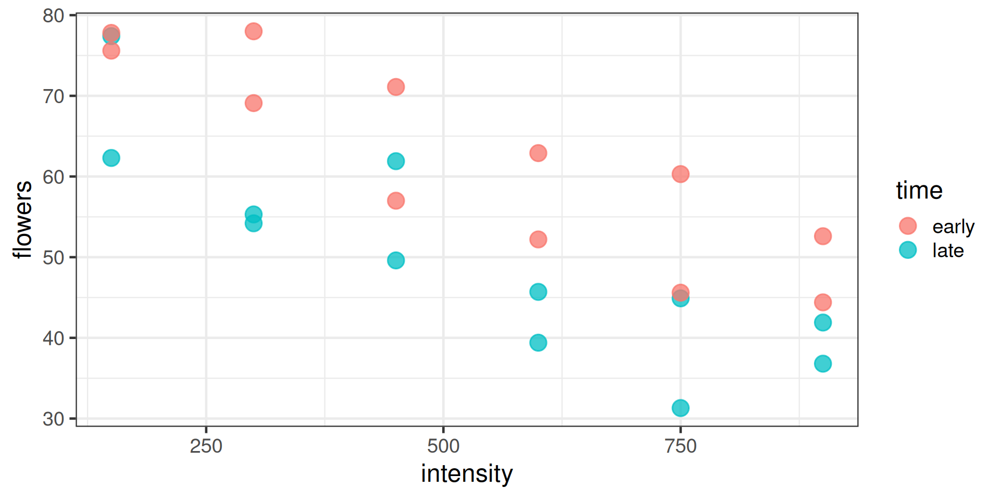
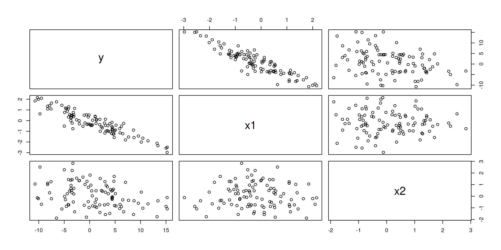
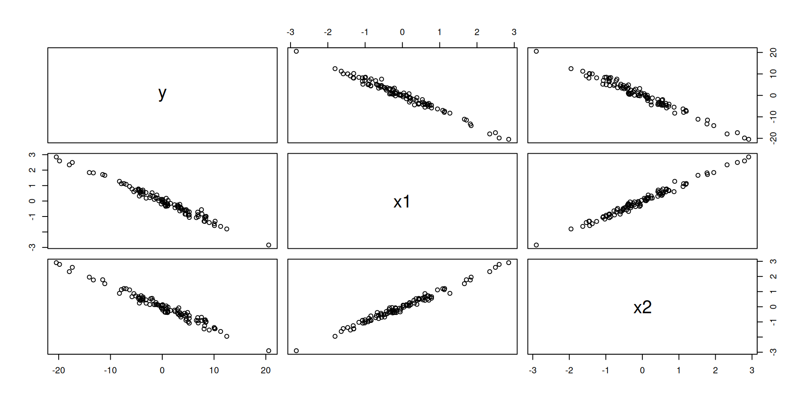
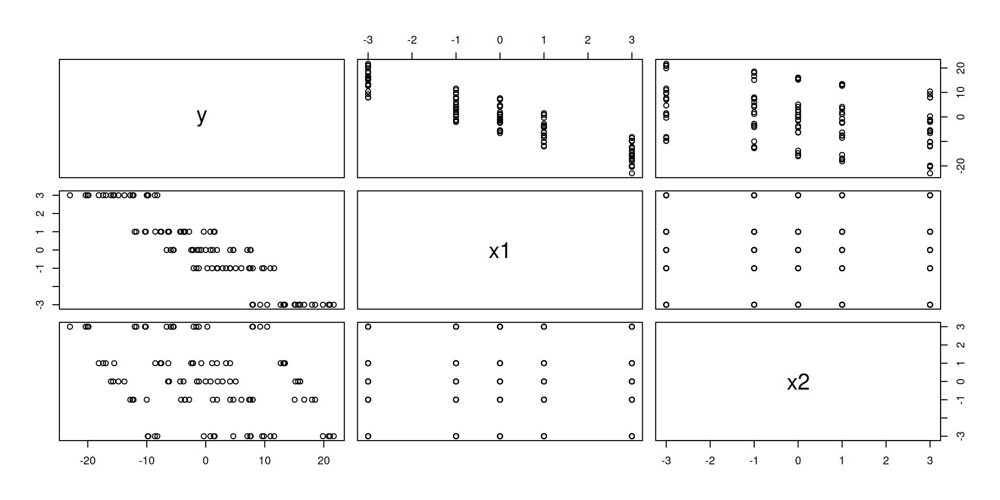

Regression Adjustments
Study: Meadowfoam
Study: Meadowfoam
Meadowfoam is a flowering California native plant.
Can we effect the number of flowers produced by plants by providing extra light treatment, which varies in its intensity as well as it’s timing?


A model for a categorical and continuous effect (ANCOVA):
\[ y_{ij} = \mu + \alpha_i + \beta_1 x_{ij} + \epsilon_{ij} \]
Each group has a linear model with the same effect on \(x\) and different effect on the categorical effect (two intercepts).
\[\begin{align} y_{i1} &= \mu + \alpha_1 + \beta_1 x_{i1} + \epsilon_{i1} = \mu_1 + \beta_1 x_{i1} + \epsilon_{i1} \\ y_{i2} &= \mu + \alpha_2 + \beta_1 x_{i2} + \epsilon_{i2} = \mu_2 + \beta_1 x_{i2} + \epsilon_{i2} \end{align}\]
Regression Adjustments
Meadowfoam
# A tibble: 24 × 3
flowers time intensity
<dbl> <chr> <dbl>
1 62.3 late 150
2 77.4 late 150
3 55.3 late 300
4 54.2 late 300
5 49.6 late 450
6 61.9 late 450
7 39.4 late 600
8 45.7 late 600
9 31.3 late 750
10 44.9 late 750
# ℹ 14 more rowsLet’s say that only time was randomly assigned and intensity was another variable that was recorded that we know is a good predictor of flowers.
What we’ve been doing
Since time is the only experimental factor, we would fit this model:
Adjust for intensity
Estimate Std. Error t value Pr(>|t|)
(Intercept) 77.38500017 2.99815637 25.810862 2.166375e-17
intensity -0.04047143 0.00513237 -7.885525 1.036787e-07
time1 6.07916641 1.31477854 4.623719 1.463777e-04 Estimate Std. Error t value Pr(>|t|)
(Intercept) 77.38500017 4.161186173 18.596861 6.059011e-15
intensity -0.04047143 0.007123293 -5.681562 1.029503e-05Analysis of Variance Table
Model 1: flowers ~ intensity
Model 2: flowers ~ intensity + time
Res.Df RSS Df Sum of Sq F Pr(>F)
1 22 1758.19
2 21 871.24 1 886.95 21.379 0.0001464 ***
---
Signif. codes: 0 '***' 0.001 '**' 0.01 '*' 0.05 '.' 0.1 ' ' 1Cautions
When fitting regression models to experimental data:
Non-experimental variables have no causal interpretation.
Regression adjustments generally should not be used in very small datasets (\(N < 20\)) because df are better spent estimating causal effects.
Collinearity
Simulated data with two explanatory variables.
# A tibble: 100 × 3
y x1 x2
<dbl> <dbl> <dbl>
1 3.67 -0.995 0.212
2 3.58 -0.475 -0.696
3 7.63 -1.53 -0.355
4 4.38 -0.556 -0.0964
5 -2.07 -0.00938 1.33
6 6.68 -0.261 -1.34
7 15.0 -2.57 -0.878
8 15.2 -2.50 -1.09
9 2.08 -0.999 1.53
10 -3.59 0.302 0.490
# ℹ 90 more rows
y x1 x2
y 1.0000000 -0.91625346 -0.33863182
x1 -0.9162535 1.00000000 -0.03027654
x2 -0.3386318 -0.03027654 1.00000000Collinearity: describes the presence of linear relationships between the explanatory variables.
Results from Linear Models
\[ \hat{\boldsymbol{\beta}} = (\mathbf{X}^\top \mathbf{X})^{-1} \mathbf{X}^\top \mathbf{y} \]
\[ Var(\hat{\boldsymbol{\beta}}) = \sigma^2 (\mathbf{X}^\top \mathbf{X})^{-1} \]
\[ Var(\hat{\beta}_j) = \frac{\sigma^2}{(n-1) Var(X_j)} \cdot \frac{1}{1 - R^2_j} \]
where \(R^2_j\) is the \(R^2\) from regressing \(X_j\) on other \(X\). The second term is called the Variance Inflation Factor (VIF).
Weak Collinearity
Estimate Std. Error t value Pr(>|t|)
(Intercept) 0.07610867 0.09933260 0.7662004 4.454177e-01
x1 -5.07893744 0.08992649 -56.4787671 5.109799e-76
x2 -2.08843929 0.09351078 -22.3336742 5.146070e-40This linear model corresponds to a plane in 3D.
Strong Collinearity
# A tibble: 100 × 3
y x1 x2
<dbl> <dbl> <dbl>
1 4.40 -0.847 -0.608
2 20.6 -2.85 -2.90
3 -1.54 0.108 0.136
4 12.5 -1.81 -1.95
5 3.10 -0.450 -0.499
6 -7.40 1.13 1.20
7 -5.85 0.782 0.661
8 2.92 -0.358 -0.188
9 -6.98 1.08 1.19
10 7.57 -0.559 -0.697
# ℹ 90 more rowsStrong Collinearity

Strong collinearity
y x1 x2
y 1.0000000 -0.9893105 -0.9857226
x1 -0.9893105 1.0000000 0.9911134
x2 -0.9857226 0.9911134 1.0000000High collinearity leads to high VIF.
Designed Experiment
# A tibble: 100 × 3
y x1 x2
<dbl> <dbl> <dbl>
1 21.7 -3 -3
2 9.56 -1 -3
3 4.66 0 -3
4 -0.338 1 -3
5 -8.21 3 -3
6 18.5 -3 -1
7 7.97 -1 -1
8 1.21 0 -1
9 -3.52 1 -1
10 -10.0 3 -1
# ℹ 90 more rowsDesigned Experiment

Design Experiment
y x1 x2
y 1.0000000 -0.9220131 -0.3742733
x1 -0.9220131 1.0000000 0.0000000
x2 -0.3742733 0.0000000 1.0000000No collinearity leads to . . .